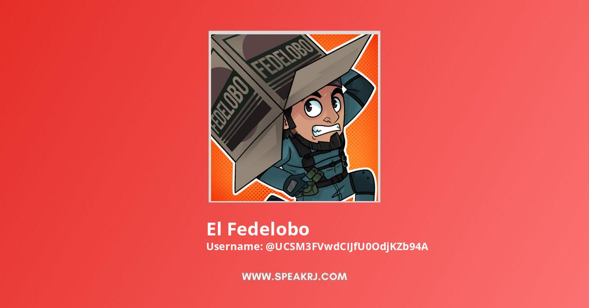

| Messi Skills | Canciones Favoritas | Videos sobre videojuegos |
|---|---|---|

|
 | |
|
Lionel Andrés Messi Cuccittini, conocido como Leo Messi,
es un futbolista argentino que juega como delantero o centrocampista.
Jugador histórico del Fútbol Club Barcelona
|
Una canción es una composición musical para la voz humana,
con letra y comúnmente acompañada por instrumentos musicales.
Normalmente es interpretada por un único vocalista
|
Federico Díaz Acuña, más conocido como El Fedelobo (4 de Agosto de 1987),
es un youtuber mexicano perteneciente de Werevertumorro Crew.
| >